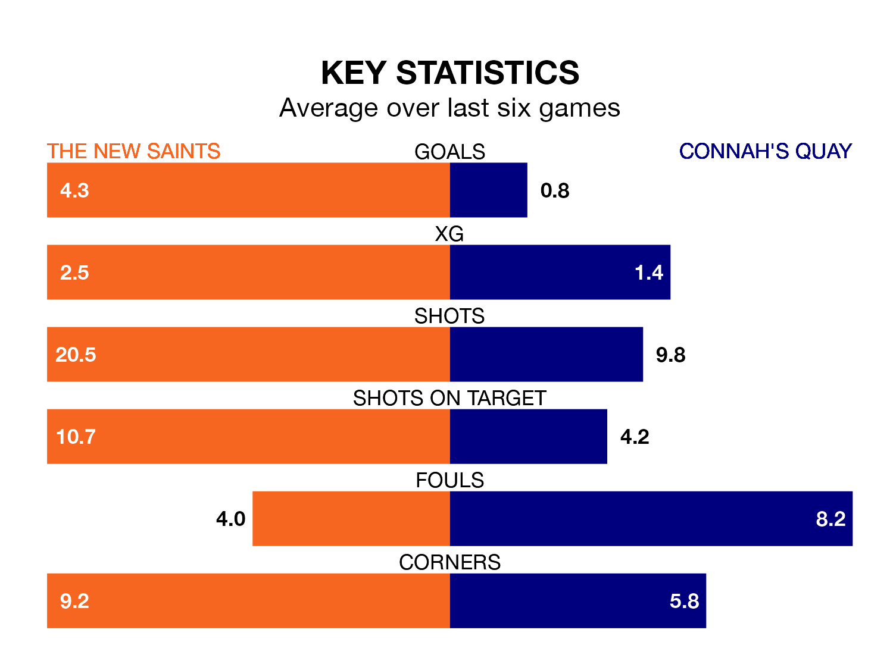

The Welsh Premier League's top two sides face each other at the Park Hall Stadium in Sunday's early kick-off, when The New Saints host second-placed Connah's Quay.
The New Saints have picked up 29 wins and two draws from 31 games so far this season, and sit 30 points above the visitors going into the 2.15pm match.
The Nomads, meanwhile, have won 18 and drawn five, picking up 59 points.
With 115 goals in 31 games so far this season, The New Saints are the league's highest scorers with 3.7 goals per game. And they are conceding fewer than average, letting in 18 goals at a rate of 0.6 per game.
Connah's Quay are also above average scorers, with 2.3 goals per game, compared to a league average of 1.5. They have conceded 1.3 goals per game.
The Saints are in exceptional form in the Welsh Premier League, with six wins and no losses from their last six games.
With a win and two draws over that period, the Nomads's form is much worse – they have taken five points from 18, compared to the home team's 18.
In the last 10 years, The New Saints and Connah's Quay have played each other on 36 occasions. The New Saints won 22 of them, Connah's Quay seven, and they drew seven times.
On average, the Saints scored 1.9 goals and the Nomads 0.8 in those matches.
Their last meeting was on March 8, when The New Saints won 5-1 away.
The New Saints' last match was on April 13, a 5-0 win against Cardiff Met, with Declan McManus (two), Daniel Patrick Williams, Jared Horlock and Leo Smith getting the goals for the Saints.
Connah's Quay drew 0-0 with Bala Town last time out, on April 12.
Updated: 15:40 (UTC), 18/04/24